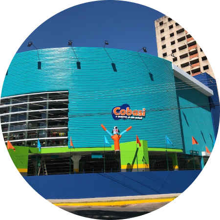

Natural de Barra Bonita - SP, é Veterinário formado pela Universidade UNIP em Bauru - SP. Adquiriu experiências profissionais trabalhando em clínicas veterinárias pequenas, até abrir sua própria franquia de lojas.
A Little Pet Shop inaugurou sua primeira loja no dia 29 Março de 2019 no interior de São Paulo. Foi pioneira no conceito de pequeno porte voltada especialmente para o cuidado de animais de estimação. Hoje, com mais de 190 lojas espalhadas pelo Brasil, nossa principal transação é a de afetos, num lugar que proporciona tantos encontros: de colaboradores, de clientes, de pets. Somos quem abastece a parte divertida do lar. Porque uma casa de verdade tem vida, tem amor. Tem pessoas, tem gente que cuida. Somos movidos por uma razão de ser. Por algo maior que nos motiva todos os dias. O que queremos de verdade é inspirar pessoas a se reconectar com a sua melhor natureza.
